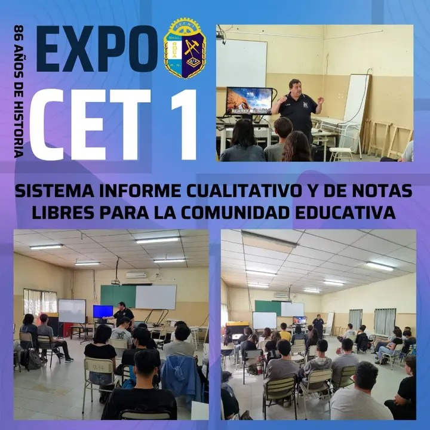

M.B.I. |
CENTRO DE
|
|
PROYECTOS |
Charla informativa Realizada por el tic y programador Guillermo Lapettina |
cabina de fotoseste proyecto fue realiza do por los estudiantes de 3°1°C.S 3°2°C.S .consistio en parecerse a una cabina de fotos ya que realizaron una estructura de madera para la parte exterior y utilizaron un programa para todo lo relacionado con la fotografia,este proyecto tuvo mucho exito en la expo ENET 2024 del CETN°1. |
|
SITIO WEB CREADO POR LOS ESTUDIANTES DE LA ORIENTACION INFORMATICA |
||
|
goroso zamir |
loncoman abigail |
izquierdo milagros |